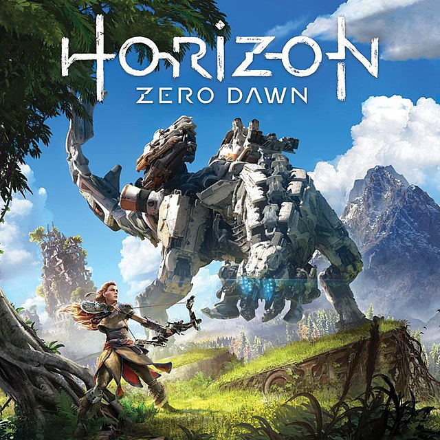
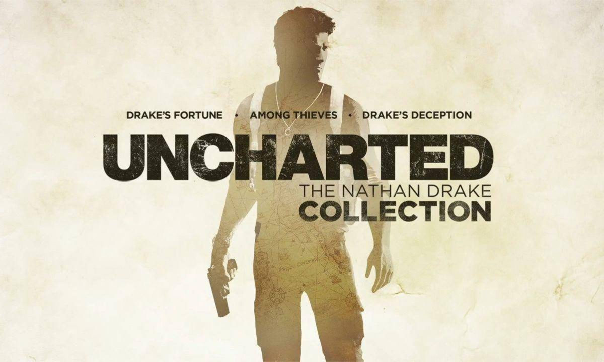

MEJORES VIDEOJUEGOS DE HISTORIA
God of War

el God of War es de los mejores juegos de la historia teniendo una rica historia en la que
Kratos y su hijo Atreus tendran un viaje para llevar las cenisas de madre a la montaña mas alta de los reinos en el cual se encontraran varios obstaculos
alunos de los jefes del juego son: __jefes God of War__
disponible en playstation 4,5 y PC
Horizon Zero Down

en Horizon jugaras como aloy una paria convertida en exploradora la cual tendra que descubrir el secreto
acerca de su madre y en el proceso convatir coon maquinas en forma de animal, vestigio de una antigua civilicacion
disponible en playstation 4,5 y PC
saga uncharted

en esta saga de 4 juegos y un spin off jugaremos como Nathan Drake un caza tersoros el cual en sus viajes se encuentra
con peligrosos villanos los cuales ponen en riesgo el planeta con amenazas sobrenaturales
disponible en playstation 4,5
orden de los juegos
- Uncharted: El tesoro de Drake
- Uncharted 2: El reino de los ladrones
- Uncharted 3: La traición de Drake
by: juan pablo carrillo hortua